From sleepwalking into an ok-ish settled life in my hometown to committing to my best self in London
Hi! I am Simon Mastrodicasa :)
I am from Liège (+-200k inhabitants) in Belgium. It is a place where 95% of the people were born there, studied there, are working there and will die there. It implies that you have stuff to do, there are jobs, and imagining yourself there in 10 years is a good prospect.
Liège is thus a perfect place if you want to settle. If you don’t, you will be the odd one out. And when all your connections think in a certain way, and you are actively trying to continue to explore, you will be an alien. It is not a comfortable position to be in.
But it also pushed me to find what I wanted to do and what is meaningful to me. My story explains that.
01
Sleepwalking
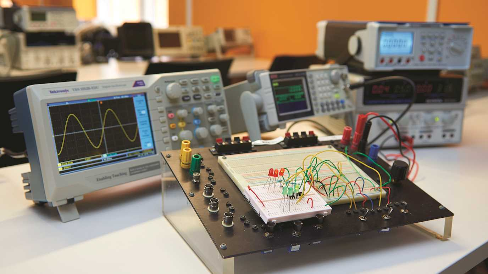
MARCH 2017. Université de Liège.
I am in a lab with a friend, trying to connect electronic components. We are both engineering students in our 4th year, and we will both go abroad for our 5th and final year. Life in the first 4 years was immensely fun with all its beer-flowing student parties, but what will happen after?
As I am trying to connect components via a cable, I envision what will come after our studies:
- Do you imagine that next year is going to be the last cool year before having a normal life?
- If you pass! Just so you know, I won't be able to save you in....Where are you going again next year?
- 6 months in Milan and 6 months in London
- Well I won't be able to save you in London...
- No but seriously, exciting next year abroad and then what?
- What what?
(I should have told you that my friend is mentally impaired). Still trying to put this $%&*%£ cable into a component, I repeat with different words for his slow brain:
- In two years, perhaps at this exact same time, we will be working here in Liège. We will then directly have our settled life, our little routine, with other engineers that have this settled life for 20 years. Work could be interesting, but imagine the conversations at the coffee machine? The highlight of the week will be when we will talk about the piano lessons of someone else’s daughter...
- True, but isn’t that life?
- ...I … I suppose? It is not really thrilling is it?
- Well what you will want in life will change over time and ...
BZZZZZZZ.
Ouch! Got electrocuted!! Being a very supportive friend, he continues:
- I told you that I won’t be able to save you in London, you are stupid enough to burn your house appartment trying to cook pasta… Do you think Mark would have electrocuted himself?
I look across the room, and see Mark. Mark is smart. He sees me. He gives me a polite smile. I nod.
Jesus yes, of course he would have not electrocuted himself. I hate my friend.
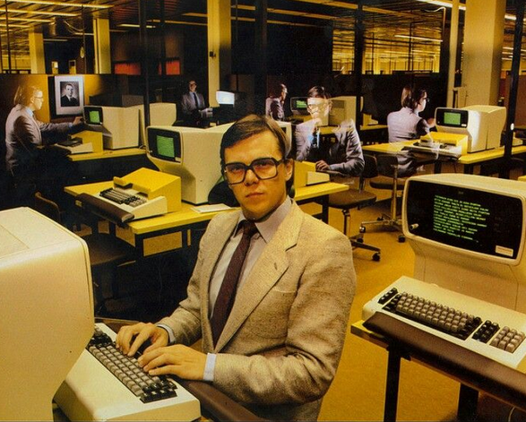
Mark would have not electrocuted himself. Mark is a good engineer. Mark calculated that he will lose his virginity in 12.67 years.
02
The Path
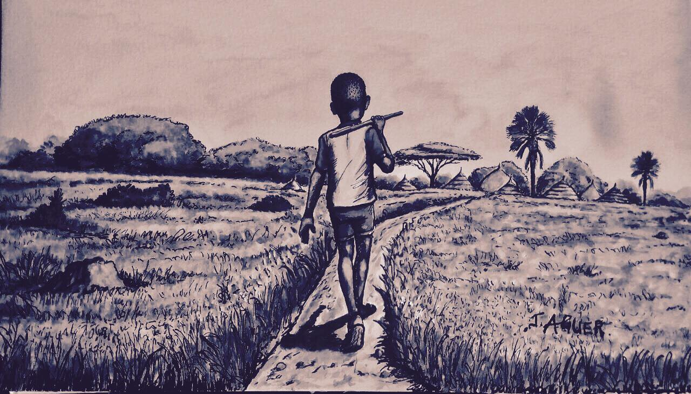
In hindsight, I really believed that was THE only path: Get a “good” diploma, find a job nearby, find your wife, buy your house, plan the kids, and you will have ticked off the main cases before your 30.
On top of living in a city where people tend to settle when they get their first job, being a grandson of Italian immigrants reinforced this idea of chasing financial security as soon as possible.
Their life was tough to put it mildly. From detained in a Nazi forced labor camp during 2 and half year (weighted 33kg in the end) to a coal miner for my grandfather, and a life-long career as a worker in peak taylorism firm for my grandmother.
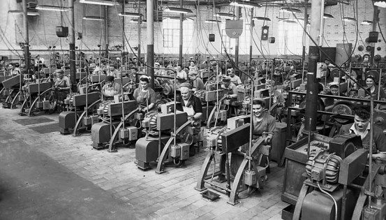
Even though life was tough and money hard earned, they went beyond what seems humanly tolerable to make sure my father did not have to work in a factory as well, so that he could go to school. That’s the immigrant story: sacrificing their entire life to improve their children’s life.
School was the way out of misery.
Focus on education, and your diploma will lead to the security of a comfortable job.
And that is what happened.
Two generations after, my sister did business school, my brother did medicine and I did engineering.
03
Catastrophy
From my parents' perspective, the job was done. My brother and my sister got their “good” diploma, and I had almost mine.
I went to London for the last 6 months of my degree.
This is where doubts about my career started to creep in.
Thanks to a teacher in Liège that was doing research with academics at UCL, I was sent to a research lab in London to work on Artificial Intelligence algorithms.
Top university, room full of Phd working there. Working on cool technical things.
But being hypertechnical, seeing only engineers and working individually made me realise that it was probably not the path for me.
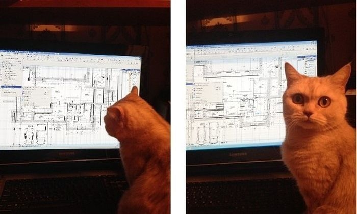
Realising that I don't care if my algorithm could be optimised
What I did not want to do became clearer, but I still had no idea of what I wanted to do. More specifically, what was I going to do next year?
A friend of mine told me about this master in Entrepreneurship in Liège, which was focused on startups/ SME. You learn some business stuff, but mostly you get experience in the field by helping real startups/SME. You get in a group of 4, and you help one company on one specific topic (business model, marketing, sales, preparing a plan to get a bank loan,...).
Getting broader knowledge, working in a team with people from very different backgrounds? Sign me in!
And then I went on to tell my family that I was interested in doing that one year master. They were thrilled because I was going to add some business knowledge on top of my technical knowledge.
Ahaha.
Lol.
Not really.
Accurate depiction of me getting pummeled
I shook foundations I did not know existed.
They obviously did not see the situation in the same light. In their head:
- What is Simon doing?? He has a good diploma, what is he trying to do?
- Does he get that entrepreneurship is not stable?
- Does he understand you need stability in your life, and that stability is given by a secure job?
- Why is he even interested in that master in the first place? Did he not like engineering?
- Is he avoiding the responsibilities of life by staying a student?
The more they tried to reason me, the more I found their reactions weird and extreme, even though it was clear that they were doing that because they deeply cared about me.
Again, we are just talking about doing a single year master (in Belgium, university education costs around 800 pounds/year), not starting a company.
I realised that my life was bound by trespassing its perimeter.
By narrowing what I could do and who I could become, the path to stability was highly probable. This path enabled my family to raise its living standards across generations, by moving from absolute hard life to modern comfort.
And up until now I was following that path.
But I started deviating from it.
I wanted to do more.
Psss.
If you enjoy this story, you will probably enjoy the little other stories I write on Linkedin.
I am fascinated by the impact of this ever increasing digital economy, which creates as many traps as it creates opportunities. More specifically, how can individuals avoid the worst and leverage online opportunities?
But no need to follow me now, I will put a reminder at the end of this story :)
04
Ignorance
When I started this master in Entrepreneurship, I was an engineer in its purest form. Heavy on technical knowledge. Skeptical on personal development.
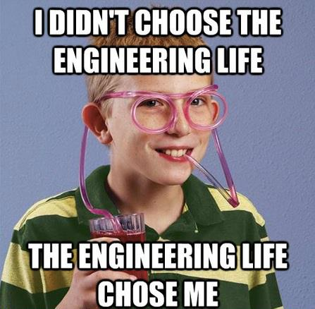
We were working in small groups composed of people from different backgrounds.
Different backgrounds meant working with people that are extremely picky on different aspects (nice presentations, design, regional politics, etc) of the same problem. I had glaring blindspots, some that I didn't even know existed.
It made me think that I was also approaching large-scale phenomena through my limited lens.
The less I knew, the less complex the subject seemed to be, the easier it was to have a manichean opinion.
Add a nuance of self-righteousness and you have the perfect cocktail for rapid judgements on complex subjects.
For example, I realised I confused my ignorance on important things such as marketing, sales, banks,... with an alleged moral purity. Big mistake.
Oh, you did a sales mission? Remind me how is it useful for an engineer?
I became interested in tasks completely outside engineering.
By being in contact with jobs that I liked much better, I switched from searching for jobs linked to my diploma to searching jobs that I liked.
You are doing this master to avoid a real job.
It demystified how people become founders. It moved from something completely outside the realm of possibilities (like becoming a famous actor) to a consequence of a strategy. The strategy is about promoting a product/service that helps solve a problem for a specific population.
Perhaps more importantly, it made me realise that if I really want to become anything (like an actor), there are strategies to achieve those goals. And some successful actors have documented their strategies/mindset, often freely accessible on the web.
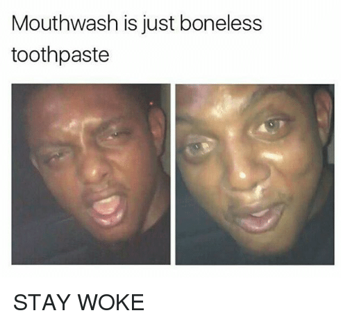
Something else I realised
What are you going to do next year?
What am I going to do next year?
I don't want to settle now.
Need financial independence.
Where can I keep getting challenged?
Going back to London and finding my first job there.
It's not easy to get it without experience.
But it was the right thing to do.
So I kept trying.
And got a job.
Yaaay!! :)
Oh you are moving to London? I could never do that, I am too attached to my family. What is that you don't have in Liege that caused you to leave?
Ffs.
05
Introspection
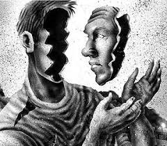
So here I was in London, I sensed that I had made a clear step in the right direction, but no way I was done. What is meaningful to me?
Before coming to London (and thus getting my first job), I read blog posts about finding your Ikigai:
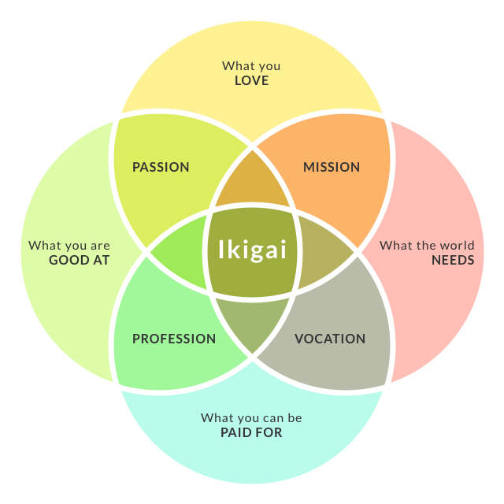
Or I was on websites like 80000 hour. Their intro: “You have 80,000 hours in your career. How can you best use them to help solve the world’s most pressing problems?”
They were all talking about finding a job out there that makes you feel good. Often a job embracing a social or environmental cause. Positive impact.
I was not fully satisfied with these readings but I was not able to pinpoint why.
It is clear now. They never talked about improving yourself or change your perspective, they were entirely focused on the external world.
But before trying to change the world, I should try to change myself.
Because searching for jobs with a positive impact implies that you have a value system that judges that only a handful of jobs are positive. The other jobs are either neutral or negative.
In other words, I was judging the outside world thinking that I am a good person, deciding what is good and bad, and trying to find jobs that fit my alleged high moral values.
I left that arrogance behind me.
Instead of looking out, it was perhaps time to look within.
I am not a good person. I am a good and a bad person at the same time. If I am not doing everything that I could do, I become bitter. If left unchecked, I can become resentful of the people that worked hard to achieve what I initially wanted.
I can’t be happy for others if I am not happy with my life. And thus became clearer that I should focus on myself before trying to fix the world.
There is another side to this as well. Life can be tough for a series of external factors (injustice, covid, sickness, etc).
In the hardest times, focusing on yourself can be seen as a coping mechanism. I can’t change others or external factors completely outside my reach, but I can change myself. And if it is my fault, it means I can do something about it.
So I started to pay attention to see where I could improve and ask myself: What can I do differently?
When?
06
Best Self
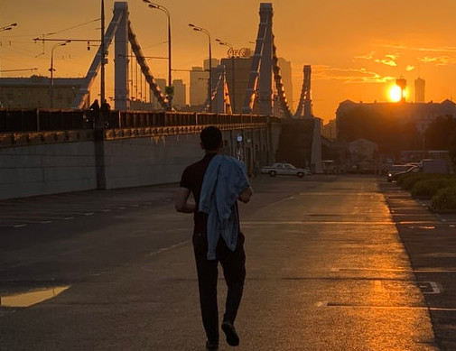
So I started to work on myself towards a sort of idealised version of myself. A person that takes full responsibility for his life.
One day, I sat down and defined:
1) which responsibilities I have to live up to or my life will get worse
2) what I want to do / what is worth aiming at
I grouped that in 6 aspects of my life.
Then what I can do to improve it.
For example:
Relationships => Call at least one person I care about each week.
Life admin => Fix all the little things that need fixing (eg get this dentist appointment)
Block time each week for each aspect.
By realising that I could become much more that I envisioned less than one year ago, I allowed myself to set ambitious goals for my career.
To turn them into reality, I needed some external world strategies. So I started to look out for people that have achieved, because I knew I could learn from them.
In a nutshell, I started to be fully committed to being the best version of myself, which is much more than I previously thought.
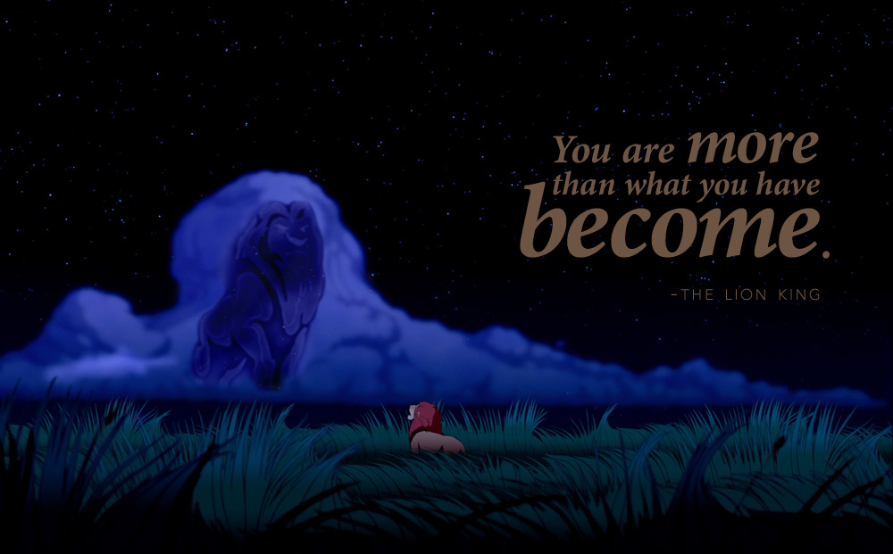
Even my boi Simba knows it
It is a profound shift in mentality.
Not only I am no longer resentful of the success of others, but I cheer for it. And the more successes, the more strategies to improve my own situation.
Indeed, when I see people that worked incredibly efficiently in a field they are passionate about, it means that I could borrow some of their tactics to achieve some success in my field.
Good.
Let’s translate this internal improvement into the outside world.
I knew what to aim at. It was now time to act on each aspect.
The career one was difficult.
Easy to read a lot, harder to come up with something you can promote.
I overthought it. I tried to come up with something good directly. Then became demotivated.
Then repicked everything, overthinking again, not going anywhere.
Let’s start with the basics this time.
What do I like?
Becoming your best self. The interaction between humans and technology.
There is so much to say about how people behave online, and how this digital world changes behaviors.
On the one hand, humans shape the online, and the generated data gives incredible insights on how people think and act.
On the other hand, the online shapes humans/reality. Internet can destroy your reputation or skyrocket your work, can help you find support bubbles or be a judge with its endless list of perfect lifes thrown at you, can feed you fake news or a free access to the best education, etc.
This digital age brings new threats but also a truckload of opportunities.
And we are heading towards more technology, more data generated, more changes.
How can an individual take advantage of that?
What do I know?
The oil of the 21st century: Data. How to get / analyse / make services with it (AI) and the inner working of internet pipelines through which data passes (and thus how hackers can divert the flow).
How can I be useful to others?
- Tips to avoid the common online risks (getting hacked, doomscrolling, trolling)
- Ecouraging people to become their best self
- How achievers used the internet to create real life opportunities
- Sneak peeks into the human mind and food thoughts on this digital age
Good enough :) I commit to write small posts on these subjects twice a week!
And that is my action for the career aspect 😎
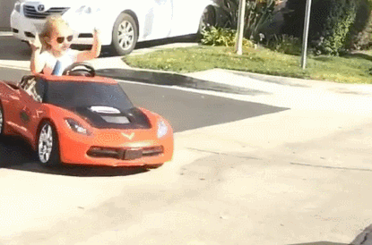
Phew! What a journey! I hope you liked the story 🙂
Now I can finally answer the question that was itching me all along: what is meaningful to me?
It is not something to be found.
As I do what is best for me, the path forward becomes clearer and clearer.
When I act towards my best self, sometimes all the pieces of my life seem to align towards the highest good. At these moments, when I am in the zone, I know that I am at the right place and the right time.
This is what meaning is to me: it comes as a consequence of pursuing worthy goals and acting towards them.
Thus, there is no point in chasing what is meaningful, since it comes as a result of doing what is the best for you.
I genuinely hope you are becoming your best self.
If not or not fully, now is a good time to start.
Onwards and upwards.
Simon Mastrodicasa 🙂
Woaw, you read the whole thing! I hope you enjoyed it 🙂
I have a drive to improve my situation, create more opportunities in the field I am interested in and this website is a byproduct of this mentality.
During this process of enthusiastically aiming upward, there were quite a few setbacks, doubts and fundamental changes of perceptions. Writing this website forced me to articulate my ideas to communicate them clearly.
I am now convinced that achievers' successes will make my and your success easier, since we have more examples next to us. When you genuily think that, how can you be resentful of others thriving because of their hardwork?
Some started with zero network, absolutely no fundings and still manage to carve their little place in the sun by leveraging online opportunities.
This could happen to me and to you too. There are strategies out there that worked for others in a similar situation.
This is what I talk about on Linkedin, so if you are interested, you can follow me there!
If you feel overly generous and want to help me, I would greatly appreciate if you could like or share this Linkedin post talking about my story.
And if you are or you know someone that works in this intersection between humans and technology, or any opportunitites that seem relevant, please don't hesitate to DM me, that would be the cherry on top!